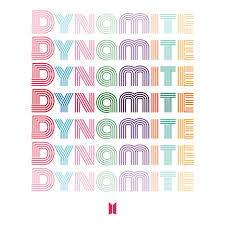

BTS
Albums
DYNAMITE
Big Hit Entertainment - August 21st, 2020

“Dynamite” is a Disco Pop single that sings of joy and confidence, bringing a new surge of much-needed ‘energy’ to reinvigorate the global community.
In this song, the global superstars find happiness by doing again what they do best: engaging in a perpetual cycle of giving and receiving joy with the world through music and performances.
It also marks BTS’ first song to be released completely in English; having sought a “breakthrough” to overcome a sense of disheartenment from within the new global climate, BTS embarks on a new challenge through “Dynamite.”
The choreography is edgy and upbeat, with deeply addicting movements that highlight the distinct charms of each BTS member.